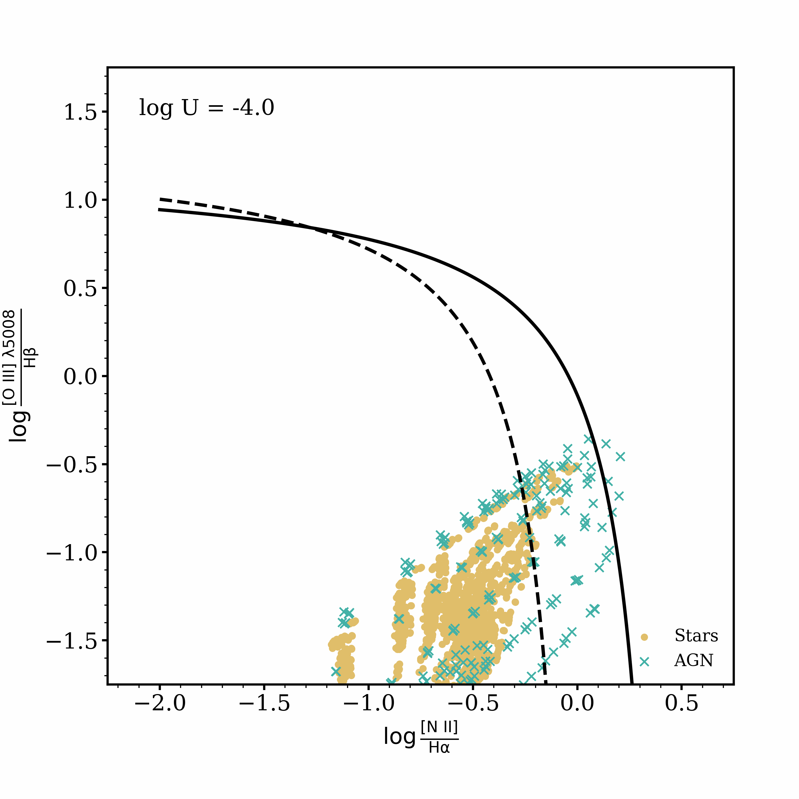

Research
I am an extragalactic astronomer who uses spectroscopy to study galaxies across cosmic time. My work revolves around space-based observatories like the James Webb Space Telescope (JWST). I have had the great privilege of being a part of some wonderful collaborations, including CEERS (pictured above), RUBIES, and several others. Here you will find information about the big science questions I seek to answer.
For anyone who may be interested in working with me or beginning research in my subfield, I have written a brief guide including several group expectations and many useful resources.
Where are the photons created?
When observing a galaxy, it is not often trivial to know what produces the light that reaches our telescopes. The spectrum of a galaxy is a critical tool to discern the astrophysical origins of photons energetic enough to ionize gas, whether that be in the interstellar medium around star forming regions, in the broad or narrow line regions around accreting black holes, or from a number of other sources. There exist many methods of performing this diagnosis, including looking at specific emission lines and their strengths relative to other features of the spectrum (see the 'BPT' diagram animation here). The 'high' ionization regime of emission line spectroscopy is often defined using emission lines of higher ionization than singly ionized oxygen (13.62 eV), and the 'very high' ionization regime defined as higher ionization than doubly ionized oxygen (35.12 eV). I study extremely high-ionization galaxies which emit photons from quadruply ionized neon (97.11 eV) in the near-ultraviolet ([Ne V] λλ3346,3426). The obvious question is: What astrophysical sources create radiation energetic enough to produce [Ne V]?
There are at least three plausible sources of radiation to create [Ne V] and other extremely high ionization emission features. Accreting massive black holes, so-called 'active galactic nuclei' (AGN), are the most obvious source, but several objects in our sample and in the literature are not consistent with classification as AGN. The relatively sparse literature to this point disagrees on the cause: some works claim it must be AGN all the time; others argue that supernova shocks or Wolf-Rayet stars are most likely.
My work has shown that, at least at z~2, [Ne V] very strongly traces accreting supermassive black holes. However, my next work shows that this may not hold at all redshifts. The early results from JWST have shown that there may be many previously unknown AGN in the early Universe, so new and robust selection methods for this epoch are critical.
I utilize photoionization modeling in conjunction with observations in an effort to develop AGN selections that are robust to many different epochs of cosmic time. I find that [Ne V] may be produced by traditional AGN, but also by accreting intermediate mass black holes and elusive Population III stars. While the field of discriminating between ionizing sources at early times is very much in its infancy, there is some promise that high-ionization lines may offer necessary insight.
High-Ionization Emission Lines
The early universe in the Epoch of Reionization (z>6) was likely reionized by energetic photons from low-mass, metal-poor galaxies. We often study galaxies like these using their spectra to look for emission lines which require large amounts of energy to create. The 'high' ionization regime of emission line spectroscopy is often defined using emission lines of higher ionization than singly ionized oxygen (13.62 eV), and the 'very high' ionization regime defined as higher ionization than doubly ionized oxygen (35.12 eV). I study extremely high-ionization galaxies which emit photons from quadruply ionized neon (97.11 eV) in the near-ultraviolet ([Ne V] λλ3346,3426). The obvious question is: What astrophysical sources create radiation energetic enough to produce [Ne V]?
There are at least three plausible sources of radiation to create [Ne V] and other extremely high ionization emission features. Accreting massive black holes, so-called 'active galactic nuclei' (AGN), are the most obvious source, but several objects in our sample and in the literature are not consistent with classification as AGN. The relatively sparse literature to this point disagrees on the cause: some works claim it must be AGN all the time; others argue that supernova shocks or Wolf-Rayet stars are most likely.
My work has shown that, at least at z~2, [Ne V] very strongly traces accreting supermassive black holes. However, my next work shows that this may not hold at all redshifts. The early results from JWST have shown that there may be many previously unknown AGN in the early Universe, so new and robust selection methods for this epoch are critical.
I utilize photoionization modeling in conjunction with observations in an effort to develop AGN selections that are robust to many different epochs of cosmic time. I find that [Ne V] may be produced by traditional AGN, but also by accreting intermediate mass black holes and elusive Population III stars. While the field of discriminating between ionizing sources at early times is very much in its infancy, there is some promise that high-ionization lines may offer necessary insight.
Near-Infrared Emission-Line Star Formation Rates and Dust Attenuation
Extragalactic star formation is often inferred from UV and optical tracers such as UV continuum luminosities and H-alpha or other emission line fluxes. These are great measures of recent star formation, except in the presence of dust in the interstellar medium. We study star formation rates derived from the near-infrared Paschen lines of hydrogen, which directly trace near-instantaneous (<10 Myr) SFRs with the same benefits of the Balmer lines' insensitivities to metallicity, temperature, and density. Notably, Paschen lines have the added benefit of being much less sensitive to interstellar dust attenuation.
We also study the implications of Paschen to Balmer line flux ratios, like Pa-beta/H-alpha, which can be used as a measure of the interstellar dust attenuation in a galaxy. This is much like the classic Balmer decrement (H-alpha/H-beta), but can be used for much dustier galaxies since the Balmer lines become too heavily attenuated for accurate measurements.